[1]:
%matplotlib inline
%load_ext autoreload
%autoreload 2
[2]:
import math
import pandas as pd
import numpy as np
import matplotlib.pyplot as plt
from helpr.api import CrackEvolutionAnalysis
from helpr.physics.pipe import Pipe
from helpr.physics.crack_initiation import DefectSpecification
from helpr.physics.environment import EnvironmentSpecification, EnvironmentSpecificationRandomLoad
from helpr.physics.material import MaterialSpecification
from helpr.physics.stress_state import InternalAxialHoopStress
from helpr.physics.crack_growth import CrackGrowth, get_design_curve
from helpr.physics.life_assessment import LifeAssessment
from helpr.physics.fracture import calculate_failure_assessment
from helpr.utilities.plots import generate_pipe_life_assessment_plot, plot_random_loading_profiles
from helpr.utilities.postprocessing import calc_pipe_life_criteria, report_single_pipe_life_criteria_results, report_single_cycle_evolution
from helpr.utilities.unit_conversion import convert_psi_to_mpa, convert_in_to_m
from probabilistic.capabilities.uncertainty_definitions import (UniformDistribution, TruncatedNormalDistribution, NormalDistribution,
TruncatedLognormalDistribution, DeterministicCharacterization,
TimeSeriesCharacterization)
Random Pressure Loading
Load user specification input file for random pressure loading
[3]:
pressure_data = pd.read_csv('./Data/random_loading_demo.csv', index_col=0)
pressure_data['r_ratio'] = pressure_data['Min']/pressure_data['Max']
# Calculate the 10th, 25th, 50th, 75th percentiles for the r_ratio column
percentile_10 = pressure_data['r_ratio'].quantile(0.10)
percentile_25 = pressure_data['r_ratio'].quantile(0.25)
percentile_50 = pressure_data['r_ratio'].quantile(0.50)
percentile_75 = pressure_data['r_ratio'].quantile(0.75)
# Grab samples that are close to the 10th, 25th, 50th, and 75th percentiles
sample_10th_percentile = pressure_data.loc[(pressure_data['r_ratio'] - percentile_10).abs().idxmin()]
sample_25th_percentile = pressure_data.loc[(pressure_data['r_ratio'] - percentile_25).abs().idxmin()]
sample_50th_percentile = pressure_data.loc[(pressure_data['r_ratio'] - percentile_50).abs().idxmin()]
sample_75th_percentile = pressure_data.loc[(pressure_data['r_ratio'] - percentile_75).abs().idxmin()]
print("10th Percentile Value of r_ratio:", percentile_10)
print("Sample Close to 10th Percentile:")
print(sample_10th_percentile)
print("25th Percentile Value of r_ratio:", percentile_25)
print("Sample Close to 25th Percentile:")
print(sample_25th_percentile)
print("50th Percentile Value of r_ratio:", percentile_50)
print("Sample Close to 50th Percentile:")
print(sample_50th_percentile)
print("\n75th Percentile Value of r_ratio:", percentile_75)
print("Sample Close to 75th Percentile:")
print(sample_75th_percentile)
10th Percentile Value of r_ratio: 0.8256739409499357
Sample Close to 10th Percentile:
Min 643.000000
Max 779.000000
r_ratio 0.825417
Name: 48, dtype: float64
25th Percentile Value of r_ratio: 0.8562556204503933
Sample Close to 25th Percentile:
Min 607.000000
Max 709.000000
r_ratio 0.856135
Name: 4, dtype: float64
50th Percentile Value of r_ratio: 0.8934531450577664
Sample Close to 50th Percentile:
Min 696.000000
Max 779.000000
r_ratio 0.893453
Name: 56, dtype: float64
75th Percentile Value of r_ratio: 0.9312762973352033
Sample Close to 75th Percentile:
Min 606.000000
Max 651.000000
r_ratio 0.930876
Name: 150, dtype: float64
[4]:
_, _ = plot_random_loading_profiles(minimum_pressure=pressure_data['Min'].to_list(),
maximum_pressure=pressure_data['Max'].to_list(),
pressure_units='psi')
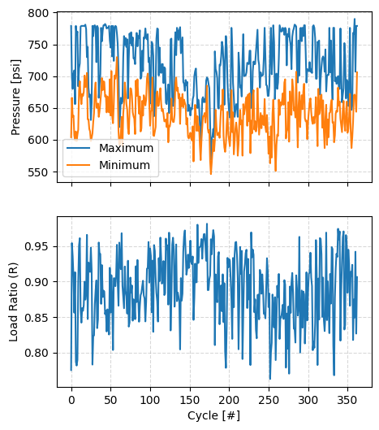
Create environments based on different static pressure loading conditions as well as the random loading conditions
[5]:
temperature = 293 # K -> temperature of gas
volume_fraction_h2 = 1 # % mole fraction H2 in natural gas blend
environment_module1 = \
EnvironmentSpecificationRandomLoad(max_pressure=convert_psi_to_mpa(pressure_data['Max'].values),
min_pressure=convert_psi_to_mpa(pressure_data['Min'].values),
temperature=temperature,
volume_fraction_h2=volume_fraction_h2)
environment_module2 = \
EnvironmentSpecification(max_pressure=convert_psi_to_mpa(max(pressure_data['Max'].values)),
min_pressure=convert_psi_to_mpa(min(pressure_data['Min'].values)),
temperature=temperature,
volume_fraction_h2=volume_fraction_h2)
environment_module3 = \
EnvironmentSpecification(max_pressure=convert_psi_to_mpa(sample_10th_percentile['Max']),
min_pressure=convert_psi_to_mpa(sample_10th_percentile['Min']),
temperature=temperature,
volume_fraction_h2=volume_fraction_h2)
environment_module4 = \
EnvironmentSpecification(max_pressure=convert_psi_to_mpa(sample_25th_percentile['Max']),
min_pressure=convert_psi_to_mpa(sample_25th_percentile['Min']),
temperature=temperature,
volume_fraction_h2=volume_fraction_h2)
environment_module5 = \
EnvironmentSpecification(max_pressure=convert_psi_to_mpa(sample_50th_percentile['Max']),
min_pressure=convert_psi_to_mpa(sample_50th_percentile['Min']),
temperature=temperature,
volume_fraction_h2=volume_fraction_h2)
environment_module6 = \
EnvironmentSpecification(max_pressure=convert_psi_to_mpa(sample_75th_percentile['Max']),
min_pressure=convert_psi_to_mpa(sample_75th_percentile['Min']),
temperature=temperature,
volume_fraction_h2=volume_fraction_h2)
environment_module7 = \
EnvironmentSpecification(max_pressure=convert_psi_to_mpa(np.mean(pressure_data['Max'].values)),
min_pressure=convert_psi_to_mpa(np.mean(pressure_data['Min'].values)),
temperature=temperature,
volume_fraction_h2=volume_fraction_h2)
Specify Common Analysis Specification
[6]:
pipe_outer_diameter = convert_in_to_m(36) # 36 inch outer diameter
wall_thickness = convert_in_to_m(0.406) # 0.406 inch wall thickness
yield_strength = convert_psi_to_mpa(52_000) # material yield strength of 52_000 psi
fracture_resistance = 55 # fracture resistance (toughness) MPa m1/2
flaw_depth = 25 # flaw 25% through pipe thickness
flaw_length = convert_in_to_m(1.575) # width of initial crack/flaw, m
surface = 'inside'
k_method = 'anderson' # Stress intensity factor method used
delta_c_rule = 'proportional'
crack_growth_model = {'model_name': 'code_case_2938'}
cycle_step = 1 # how many cycles in every numerical step
max_cycles = math.inf # maximum number of steps
Function to Emulate Crack Evolution Analysis
[7]:
def create_pipe_evaluation(env_mod, cycle_step=1):
pipe_mod = Pipe(outer_diameter=pipe_outer_diameter,
wall_thickness=wall_thickness)
material_mod = MaterialSpecification(yield_strength=yield_strength,
fracture_resistance=fracture_resistance)
defect_mod = DefectSpecification(flaw_depth=flaw_depth,
flaw_length=flaw_length,
surface=surface)
stress_mod = InternalAxialHoopStress(pipe=pipe_mod,
environment=env_mod,
material=material_mod,
defect=defect_mod,
stress_intensity_method=k_method)
crack_grow_mod = CrackGrowth(environment=env_mod,
growth_model_specification=crack_growth_model)
pipe_eval = LifeAssessment(pipe_specification=pipe_mod,
stress_state=stress_mod,
crack_growth=crack_grow_mod,
delta_c_rule=delta_c_rule)
load_cycling = pipe_eval.calc_life_assessment(max_cycles=max_cycles,
cycle_step=cycle_step)
calculate_failure_assessment({'fracture_resistance': [fracture_resistance],
'yield_strength': [yield_strength]},
[load_cycling],
[stress_mod],
'simple')
life_criteria = calc_pipe_life_criteria(cycle_results=load_cycling,
pipe=pipe_mod,
material=material_mod)
return load_cycling, life_criteria
Crack Evolution Analyses for Environments Specified
[8]:
load_cycling1, life_criteria1 = create_pipe_evaluation(environment_module1)
/Users/bbschro/Development/helpr_external/src/helpr/physics/stress_state.py:521: UserWarning: Inner Radius / wall thickness exceeds bounds 5 <= R_i/t <= 20, R_i/t = 43.33497536945812, violating Anderson solution limits.
wr.warn('Inner Radius / wall thickness exceeds bounds ' +
[9]:
load_cycling2, life_criteria2 = create_pipe_evaluation(environment_module2)
[10]:
load_cycling3, life_criteria3 = create_pipe_evaluation(environment_module3)
[11]:
load_cycling4, life_criteria4 = create_pipe_evaluation(environment_module4)
[12]:
load_cycling5, life_criteria5 = create_pipe_evaluation(environment_module5)
[13]:
# evolve in terms of a/t to speed up evaluation due to high cycle count
load_cycling6, life_criteria6 = create_pipe_evaluation(environment_module6, cycle_step=None)
[14]:
load_cycling7, life_criteria7 = create_pipe_evaluation(environment_module7)
[15]:
specific_life_criteria_result1 = report_single_pipe_life_criteria_results(life_criteria1, pipe_index=0)
specific_load_cycling1 = report_single_cycle_evolution(load_cycling1, pipe_index=0)
specific_life_criteria_result2 = report_single_pipe_life_criteria_results(life_criteria2, pipe_index=0)
specific_load_cycling2 = report_single_cycle_evolution(load_cycling2, pipe_index=0)
specific_life_criteria_result3 = report_single_pipe_life_criteria_results(life_criteria3, pipe_index=0)
specific_load_cycling3 = report_single_cycle_evolution(load_cycling3, pipe_index=0)
specific_life_criteria_result4 = report_single_pipe_life_criteria_results(life_criteria4, pipe_index=0)
specific_load_cycling4 = report_single_cycle_evolution(load_cycling4, pipe_index=0)
specific_life_criteria_result5 = report_single_pipe_life_criteria_results(life_criteria5, pipe_index=0)
specific_load_cycling5 = report_single_cycle_evolution(load_cycling5, pipe_index=0)
specific_life_criteria_result6 = report_single_pipe_life_criteria_results(life_criteria6, pipe_index=0)
specific_load_cycling6 = report_single_cycle_evolution(load_cycling6, pipe_index=0)
Cycles to a(crit) Cycles to 25% a(crit) Cycles to 1/2 Nc \
Total cycles 202408.474162 1.000000 101204.237081
a/t 0.390636 0.097659 0.273613
Cycles to FAD line
Total cycles 181905.00000
a/t 0.32682
Cycles to a(crit) Cycles to 25% a(crit) Cycles to 1/2 Nc \
Total cycles 2341.533508 1.000000 1170.766754
a/t 0.347769 0.086942 0.271827
Cycles to FAD line
Total cycles 2184.737678
a/t 0.322840
Cycles to a(crit) Cycles to 25% a(crit) Cycles to 1/2 Nc \
Total cycles 57321.937063 1.000000 28660.968532
a/t 0.351048 0.087762 0.271996
Cycles to FAD line
Total cycles 54065.251420
a/t 0.327264
Cycles to a(crit) Cycles to 25% a(crit) Cycles to 1/2 Nc \
Total cycles 331647.232139 1.000000 165823.616069
a/t 0.383852 0.095963 0.273287
Cycles to FAD line
Total cycles 321622.597499
a/t 0.357025
Cycles to a(crit) Cycles to 25% a(crit) Cycles to 1/2 Nc \
Total cycles 848378.598911 1.000000 424189.299455
a/t 0.351048 0.087762 0.271996
Cycles to FAD line
Total cycles 800182.313762
a/t 0.327264
Cycles to a(crit) Cycles to 25% a(crit) Cycles to 1/2 Nc \
Total cycles 1.179245e+07 1.000000 5.896224e+06
a/t 4.154551e-01 0.103864 2.939018e-01
Cycles to FAD line
Total cycles 1.136406e+07
a/t 3.941120e-01
Plots Comparing Impact of Different Pressure Loading Assumptions
[16]:
plt.figure(figsize=(5, 4))
plt.plot(specific_load_cycling1['Total cycles'], specific_load_cycling1['a/t'], 'b-', label='variable pressure')
plt.plot(specific_life_criteria_result1['Cycles to a(crit)'][0],
specific_life_criteria_result1['Cycles to a(crit)'][1], 'k*')
plt.plot(specific_load_cycling2['Total cycles'], specific_load_cycling2['a/t'], 'r--', label='max Pmax/min Pmin')
plt.plot(specific_life_criteria_result2['Cycles to a(crit)'][0],
specific_life_criteria_result2['Cycles to a(crit)'][1], 'k*')
plt.plot(specific_load_cycling3['Total cycles'], specific_load_cycling3['a/t'], 'g:', label='10th percentile R')
plt.plot(specific_life_criteria_result3['Cycles to a(crit)'][0],
specific_life_criteria_result3['Cycles to a(crit)'][1], 'k*')
plt.plot(specific_load_cycling4['Total cycles'], specific_load_cycling4['a/t'], 'c-.', label='25th percentile R')
plt.plot(specific_life_criteria_result4['Cycles to a(crit)'][0],
specific_life_criteria_result4['Cycles to a(crit)'][1], 'k*')
plt.plot(specific_load_cycling5['Total cycles'], specific_load_cycling5['a/t'], color='m',
linestyle='-', dashes=[10, 5, 2, 5], label='50th percentile R')
plt.plot(specific_life_criteria_result5['Cycles to a(crit)'][0],
specific_life_criteria_result5['Cycles to a(crit)'][1], 'k*')
plt.plot(specific_load_cycling6['Total cycles'], specific_load_cycling6['a/t'], color='orange',
linestyle='-', dashes=[7, 3, 2, 4], label='75th percentile R')
plt.plot(specific_life_criteria_result6['Cycles to a(crit)'][0],
specific_life_criteria_result6['Cycles to a(crit)'][1], 'k*')
plt.grid(color='gray', linestyle='--', alpha=0.3)
plt.legend(loc=0)
plt.xlabel('Total Cycles [#]')
plt.ylabel('a/t [-]')
plt.locator_params(axis='x', nbins=6)
plt.xscale('log')
plt.xlim(1E1, 3E7)
plt.figure(figsize=(5, 4))
plt.plot(specific_load_cycling1['Total cycles'],
specific_load_cycling1['R ratio'], 'b-')
plt.plot(specific_load_cycling2['Total cycles'],
specific_load_cycling2['R ratio'], 'r--')
plt.plot(specific_load_cycling3['Total cycles'],
specific_load_cycling3['R ratio'], 'g:')
plt.plot(specific_load_cycling4['Total cycles'],
specific_load_cycling4['R ratio'], 'c-.')
plt.plot(specific_load_cycling5['Total cycles'],
specific_load_cycling5['R ratio'],
color='m', linestyle='-', dashes=[10, 5, 2, 5])
plt.plot(specific_load_cycling6['Total cycles'],
specific_load_cycling6['R ratio'],
color='orange', linestyle='-', dashes=[7, 3, 2, 4])
plt.grid(color='gray', linestyle='--', alpha=0.3)
plt.xlabel('Total Cycles [#]')
plt.ylabel('Load Ratio (R)')
plt.xscale('log')
plt.figure(figsize=(5, 4))
plt.plot(specific_load_cycling1['Total cycles'],
specific_load_cycling1['Kmax (MPa m^1/2)'] - specific_load_cycling1['Kmin (MPa m^1/2)'], 'b-')
plt.plot(specific_load_cycling2['Total cycles'],
specific_load_cycling2['Kmax (MPa m^1/2)'] - specific_load_cycling2['Kmin (MPa m^1/2)'], 'r--')
plt.plot(specific_load_cycling3['Total cycles'],
specific_load_cycling3['Kmax (MPa m^1/2)'] - specific_load_cycling3['Kmin (MPa m^1/2)'], 'g:')
plt.plot(specific_load_cycling4['Total cycles'],
specific_load_cycling4['Kmax (MPa m^1/2)'] - specific_load_cycling4['Kmin (MPa m^1/2)'], 'c-.')
plt.plot(specific_load_cycling5['Total cycles'],
specific_load_cycling5['Kmax (MPa m^1/2)'] - specific_load_cycling5['Kmin (MPa m^1/2)'],
color='m', linestyle='-', dashes=[10, 5, 2, 5])
plt.plot(specific_load_cycling6['Total cycles'],
specific_load_cycling6['Kmax (MPa m^1/2)'] - specific_load_cycling6['Kmin (MPa m^1/2)'],
color='orange', linestyle='-', dashes=[7, 3, 2, 4])
plt.grid(color='gray', linestyle='--', alpha=0.3)
plt.xlabel('Total Cycles [#]')
plt.ylabel('$\Delta$ K [MPa m$^{1/2}$]')
plt.xscale('log');
/var/folders/m7/xj3t74md7k32bgn0f0bvz3mr002lyh/T/ipykernel_24616/2688859834.py:4: FutureWarning: Series.__getitem__ treating keys as positions is deprecated. In a future version, integer keys will always be treated as labels (consistent with DataFrame behavior). To access a value by position, use `ser.iloc[pos]`
plt.plot(specific_life_criteria_result1['Cycles to a(crit)'][0],
/var/folders/m7/xj3t74md7k32bgn0f0bvz3mr002lyh/T/ipykernel_24616/2688859834.py:5: FutureWarning: Series.__getitem__ treating keys as positions is deprecated. In a future version, integer keys will always be treated as labels (consistent with DataFrame behavior). To access a value by position, use `ser.iloc[pos]`
specific_life_criteria_result1['Cycles to a(crit)'][1], 'k*')
/var/folders/m7/xj3t74md7k32bgn0f0bvz3mr002lyh/T/ipykernel_24616/2688859834.py:8: FutureWarning: Series.__getitem__ treating keys as positions is deprecated. In a future version, integer keys will always be treated as labels (consistent with DataFrame behavior). To access a value by position, use `ser.iloc[pos]`
plt.plot(specific_life_criteria_result2['Cycles to a(crit)'][0],
/var/folders/m7/xj3t74md7k32bgn0f0bvz3mr002lyh/T/ipykernel_24616/2688859834.py:9: FutureWarning: Series.__getitem__ treating keys as positions is deprecated. In a future version, integer keys will always be treated as labels (consistent with DataFrame behavior). To access a value by position, use `ser.iloc[pos]`
specific_life_criteria_result2['Cycles to a(crit)'][1], 'k*')
/var/folders/m7/xj3t74md7k32bgn0f0bvz3mr002lyh/T/ipykernel_24616/2688859834.py:12: FutureWarning: Series.__getitem__ treating keys as positions is deprecated. In a future version, integer keys will always be treated as labels (consistent with DataFrame behavior). To access a value by position, use `ser.iloc[pos]`
plt.plot(specific_life_criteria_result3['Cycles to a(crit)'][0],
/var/folders/m7/xj3t74md7k32bgn0f0bvz3mr002lyh/T/ipykernel_24616/2688859834.py:13: FutureWarning: Series.__getitem__ treating keys as positions is deprecated. In a future version, integer keys will always be treated as labels (consistent with DataFrame behavior). To access a value by position, use `ser.iloc[pos]`
specific_life_criteria_result3['Cycles to a(crit)'][1], 'k*')
/var/folders/m7/xj3t74md7k32bgn0f0bvz3mr002lyh/T/ipykernel_24616/2688859834.py:16: FutureWarning: Series.__getitem__ treating keys as positions is deprecated. In a future version, integer keys will always be treated as labels (consistent with DataFrame behavior). To access a value by position, use `ser.iloc[pos]`
plt.plot(specific_life_criteria_result4['Cycles to a(crit)'][0],
/var/folders/m7/xj3t74md7k32bgn0f0bvz3mr002lyh/T/ipykernel_24616/2688859834.py:17: FutureWarning: Series.__getitem__ treating keys as positions is deprecated. In a future version, integer keys will always be treated as labels (consistent with DataFrame behavior). To access a value by position, use `ser.iloc[pos]`
specific_life_criteria_result4['Cycles to a(crit)'][1], 'k*')
/var/folders/m7/xj3t74md7k32bgn0f0bvz3mr002lyh/T/ipykernel_24616/2688859834.py:21: FutureWarning: Series.__getitem__ treating keys as positions is deprecated. In a future version, integer keys will always be treated as labels (consistent with DataFrame behavior). To access a value by position, use `ser.iloc[pos]`
plt.plot(specific_life_criteria_result5['Cycles to a(crit)'][0],
/var/folders/m7/xj3t74md7k32bgn0f0bvz3mr002lyh/T/ipykernel_24616/2688859834.py:22: FutureWarning: Series.__getitem__ treating keys as positions is deprecated. In a future version, integer keys will always be treated as labels (consistent with DataFrame behavior). To access a value by position, use `ser.iloc[pos]`
specific_life_criteria_result5['Cycles to a(crit)'][1], 'k*')
/var/folders/m7/xj3t74md7k32bgn0f0bvz3mr002lyh/T/ipykernel_24616/2688859834.py:26: FutureWarning: Series.__getitem__ treating keys as positions is deprecated. In a future version, integer keys will always be treated as labels (consistent with DataFrame behavior). To access a value by position, use `ser.iloc[pos]`
plt.plot(specific_life_criteria_result6['Cycles to a(crit)'][0],
/var/folders/m7/xj3t74md7k32bgn0f0bvz3mr002lyh/T/ipykernel_24616/2688859834.py:27: FutureWarning: Series.__getitem__ treating keys as positions is deprecated. In a future version, integer keys will always be treated as labels (consistent with DataFrame behavior). To access a value by position, use `ser.iloc[pos]`
specific_life_criteria_result6['Cycles to a(crit)'][1], 'k*')
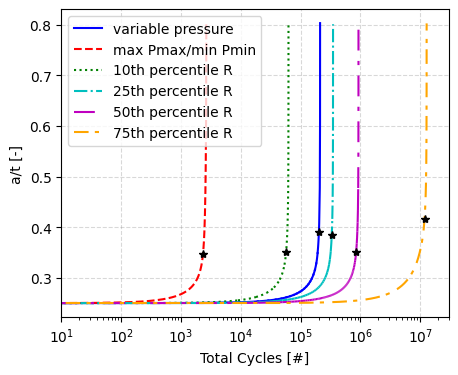
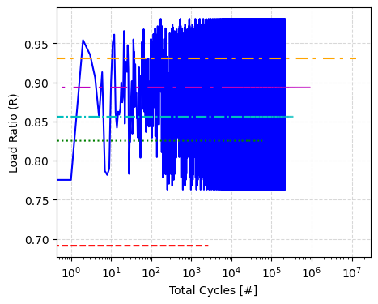
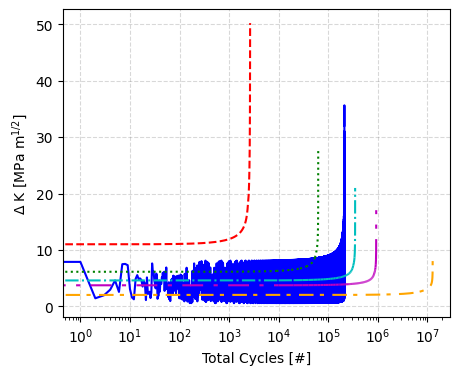
[17]:
plt.figure(figsize=(5, 4))
plt.plot(specific_load_cycling1['Total cycles'], specific_load_cycling1['a/t'], 'b-', label='random pressure')
plt.plot(specific_life_criteria_result1['Cycles to a(crit)'][0],
specific_life_criteria_result1['Cycles to a(crit)'][1], 'k*')
plt.plot(specific_load_cycling2['Total cycles'], specific_load_cycling2['a/t'], 'r--', label='max P$_{max}$/min P$_{min}$')
plt.plot(specific_life_criteria_result2['Cycles to a(crit)'][0],
specific_life_criteria_result2['Cycles to a(crit)'][1], 'k*')
plt.plot(specific_load_cycling6['Total cycles'], specific_load_cycling6['a/t'], color='m',
linestyle='-', dashes=[10, 5, 2, 5], label='mean P$_{max}$/mean P$_{min}$')
plt.plot(specific_life_criteria_result6['Cycles to a(crit)'][0],
specific_life_criteria_result6['Cycles to a(crit)'][1], 'k*')
plt.grid(color='gray', linestyle='--', alpha=0.3)
plt.legend(loc=0)
plt.xlabel('Total Cycles [#]')
plt.ylabel('a/t [-]')
plt.locator_params(axis='x', nbins=6)
plt.xscale('log')
plt.xlim(1E1, 3E7);
/var/folders/m7/xj3t74md7k32bgn0f0bvz3mr002lyh/T/ipykernel_24616/2885443421.py:4: FutureWarning: Series.__getitem__ treating keys as positions is deprecated. In a future version, integer keys will always be treated as labels (consistent with DataFrame behavior). To access a value by position, use `ser.iloc[pos]`
plt.plot(specific_life_criteria_result1['Cycles to a(crit)'][0],
/var/folders/m7/xj3t74md7k32bgn0f0bvz3mr002lyh/T/ipykernel_24616/2885443421.py:5: FutureWarning: Series.__getitem__ treating keys as positions is deprecated. In a future version, integer keys will always be treated as labels (consistent with DataFrame behavior). To access a value by position, use `ser.iloc[pos]`
specific_life_criteria_result1['Cycles to a(crit)'][1], 'k*')
/var/folders/m7/xj3t74md7k32bgn0f0bvz3mr002lyh/T/ipykernel_24616/2885443421.py:8: FutureWarning: Series.__getitem__ treating keys as positions is deprecated. In a future version, integer keys will always be treated as labels (consistent with DataFrame behavior). To access a value by position, use `ser.iloc[pos]`
plt.plot(specific_life_criteria_result2['Cycles to a(crit)'][0],
/var/folders/m7/xj3t74md7k32bgn0f0bvz3mr002lyh/T/ipykernel_24616/2885443421.py:9: FutureWarning: Series.__getitem__ treating keys as positions is deprecated. In a future version, integer keys will always be treated as labels (consistent with DataFrame behavior). To access a value by position, use `ser.iloc[pos]`
specific_life_criteria_result2['Cycles to a(crit)'][1], 'k*')
/var/folders/m7/xj3t74md7k32bgn0f0bvz3mr002lyh/T/ipykernel_24616/2885443421.py:13: FutureWarning: Series.__getitem__ treating keys as positions is deprecated. In a future version, integer keys will always be treated as labels (consistent with DataFrame behavior). To access a value by position, use `ser.iloc[pos]`
plt.plot(specific_life_criteria_result6['Cycles to a(crit)'][0],
/var/folders/m7/xj3t74md7k32bgn0f0bvz3mr002lyh/T/ipykernel_24616/2885443421.py:14: FutureWarning: Series.__getitem__ treating keys as positions is deprecated. In a future version, integer keys will always be treated as labels (consistent with DataFrame behavior). To access a value by position, use `ser.iloc[pos]`
specific_life_criteria_result6['Cycles to a(crit)'][1], 'k*')
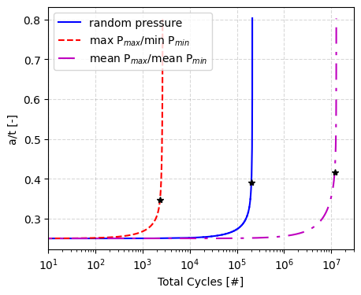
Ensuring That Loaded Random Pressure Data Was Utilized
[18]:
plt.figure(figsize=(10, 3))
plt.plot(pressure_data['r_ratio'], label='Input')
plt.plot(specific_load_cycling1['Total cycles']-1,
specific_load_cycling1['R ratio'],
'r--', label='Output')
plt.xlabel('Day')
plt.ylabel('Load Ratio (R)')
plt.grid(color='gray', linestyle='--', alpha=0.3)
plt.legend(loc=0)
plt.xlim(0, 363)
plt.figure(figsize=(10, 3))
plt.plot(specific_load_cycling1['Total cycles']-1,
specific_load_cycling1['R ratio'],
'r--', label='Output')
plt.xlabel('Day')
plt.ylabel('Load Ratio (R)')
plt.grid(color='gray', linestyle='--', alpha=0.3)
plt.legend(loc=0)
plt.xlim(363, 363*2);
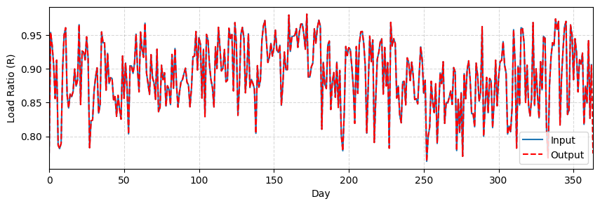
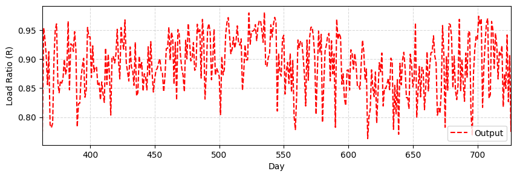
Passing Random Pressure Loading Profile Through API Interface for Deterministic Analysis
[19]:
analysis_det = CrackEvolutionAnalysis(outer_diameter=DeterministicCharacterization(name='outer_diameter', value=pipe_outer_diameter),
wall_thickness=DeterministicCharacterization(name='wall_thickness', value=wall_thickness),
flaw_depth=DeterministicCharacterization(name='flaw_depth', value=flaw_depth),
max_pressure=TimeSeriesCharacterization(name='max_pressure', value=convert_psi_to_mpa(pressure_data['Max'].values)),
min_pressure=TimeSeriesCharacterization(name='min_pressure', value=convert_psi_to_mpa(pressure_data['Min'].values)),
temperature=DeterministicCharacterization(name='temperature', value=temperature),
volume_fraction_h2=DeterministicCharacterization(name='volume_fraction_h2', value=volume_fraction_h2),
yield_strength=DeterministicCharacterization(name='yield_strength', value=yield_strength),
fracture_resistance=DeterministicCharacterization(name='fracture_resistance', value=fracture_resistance),
flaw_length=DeterministicCharacterization(name='flaw_length', value=flaw_length),
stress_intensity_method=k_method,
surface=surface,
cycle_step=cycle_step,
max_cycles=max_cycles)
analysis_det.perform_study()
/Users/bbschro/Development/helpr_external/src/helpr/physics/stress_state.py:521: UserWarning: Inner Radius / wall thickness exceeds bounds 5 <= R_i/t <= 20, R_i/t = 43.33497536945812, violating Anderson solution limits.
wr.warn('Inner Radius / wall thickness exceeds bounds ' +
[20]:
# Only print intermediate variables for first values in random pressure loading
analysis_det.nominal_intermediate_variables
[20]:
{'r_ratio': np.float64(0.7753530166880616),
'fugacity_ratio': np.float64(0.16223362994308482),
'%SMYS': np.float64(66.417203486169),
'a (m)': 0.0025781000000000003,
'a/2c': 0.06444444444444446,
't/R': 0.023076048652949873}
[21]:
analysis_det.postprocess_single_crack_results()
_, _ = analysis_det.get_design_curve_plot()
_, _ = analysis_det.assemble_failure_assessment_diagram()
Cycles to a(crit) Cycles to 25% a(crit) Cycles to 1/2 Nc \
Total cycles 202408.474162 1.000000 101204.237081
a/t 0.390636 0.097659 0.273613
Cycles to FAD line
Total cycles 181905.00000
a/t 0.32682
/Users/bbschro/Development/helpr_external/src/helpr/api.py:960: UserWarning: Extraction of FAD intersection QoI when using user specified random loading profile may be incorrect due to its stochastic nature.
warnings.warn(
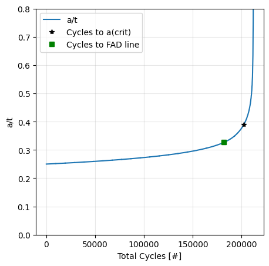
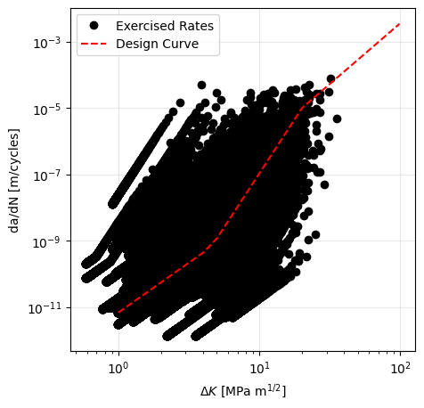
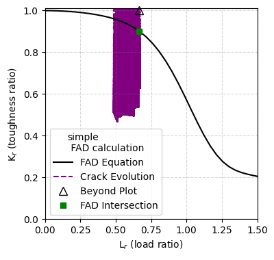
[22]:
pipe_outer_diameter = DeterministicCharacterization(name='outer_diameter',
value=convert_in_to_m(36)) # pipe outer diameter, m
wall_thickness = DeterministicCharacterization(name='wall_thickness',
value=convert_in_to_m(0.406)) # pipe wall thickness, m
yield_strength = DeterministicCharacterization(name='yield_strength',
value=convert_psi_to_mpa(52_000)) # material yield strength, psi
fracture_resistance = DeterministicCharacterization(name='fracture_resistance',
value=55) # fracture resistance (toughness), MPa m1/2
max_pressure = TimeSeriesCharacterization(name='max_pressure',
value=convert_psi_to_mpa(pressure_data['Max'].values))
min_pressure = TimeSeriesCharacterization(name='min_pressure',
value=convert_psi_to_mpa(pressure_data['Min'].values))
temperature = UniformDistribution(name='temperature',
uncertainty_type='aleatory',
nominal_value=293,
upper_bound=300,
lower_bound=285) # gas blend temperature variation, K
volume_fraction_h2 = UniformDistribution(name='volume_fraction_h2',
uncertainty_type='aleatory',
nominal_value=0.1,
upper_bound=0.2,
lower_bound=0) # % volume fraction H2 in natural gas blend, fraction
flaw_depth = TruncatedLognormalDistribution(name='flaw_depth',
uncertainty_type='aleatory',
nominal_value=25,
mu=3.2,
sigma=.17,
upper_bound=80,
lower_bound=0.001) # initial flaw depth, % wall thickness
flaw_length = DeterministicCharacterization(name='flaw_length',
value=convert_in_to_m(1.575)) # length of initial crack/flaw, m
sample_size = 10
sample_type = 'lhs'
[23]:
analysis_prob = CrackEvolutionAnalysis(outer_diameter=pipe_outer_diameter,
wall_thickness=wall_thickness,
flaw_depth=flaw_depth,
max_pressure=max_pressure,
min_pressure=min_pressure,
temperature=temperature,
volume_fraction_h2=volume_fraction_h2,
yield_strength=yield_strength,
fracture_resistance=fracture_resistance,
flaw_length=flaw_length,
aleatory_samples=sample_size,
sample_type=sample_type,
stress_intensity_method=k_method,
surface=surface,
cycle_step=cycle_step,
max_cycles=max_cycles)
analysis_prob.perform_study()
/Users/bbschro/Development/helpr_external/src/helpr/physics/stress_state.py:521: UserWarning: Inner Radius / wall thickness exceeds bounds 5 <= R_i/t <= 20, R_i/t = 43.33497536945812, violating Anderson solution limits.
wr.warn('Inner Radius / wall thickness exceeds bounds ' +
[24]:
analysis_prob.generate_probabilistic_results_plots(plotted_variable=['Cycles to a(crit)'])
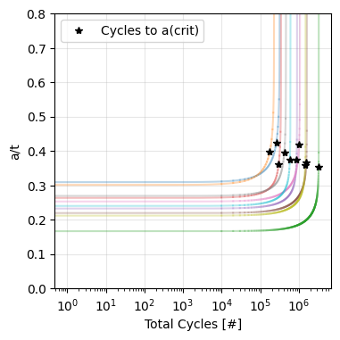
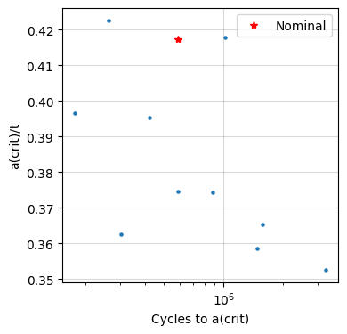
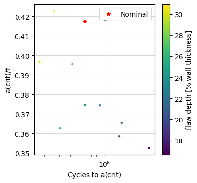
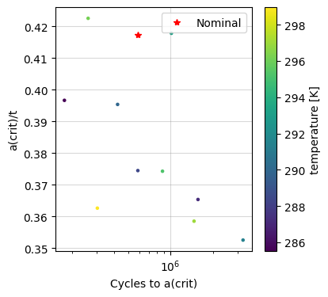
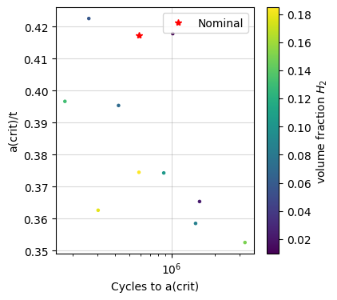
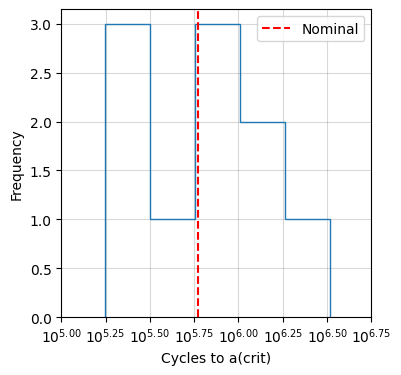
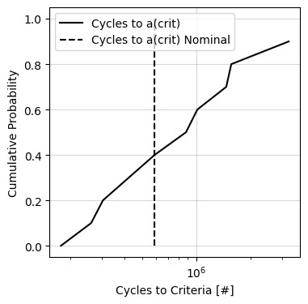
[25]:
_, _ = analysis_prob.assemble_failure_assessment_diagram()
/Users/bbschro/Development/helpr_external/src/helpr/api.py:960: UserWarning: Extraction of FAD intersection QoI when using user specified random loading profile may be incorrect due to its stochastic nature.
warnings.warn(
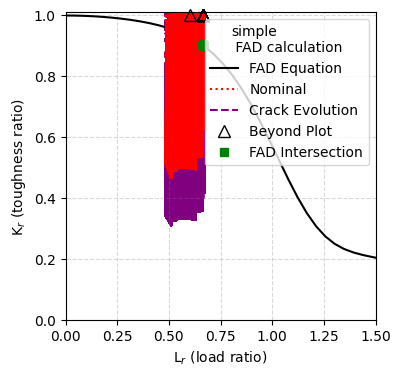
[26]:
_ = analysis_prob.generate_input_parameter_plots()
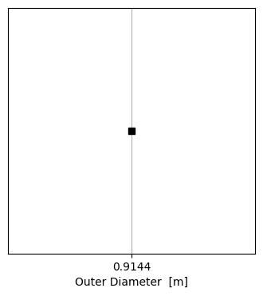
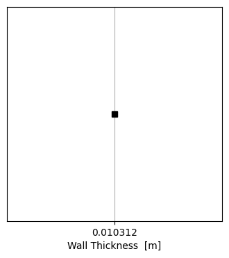
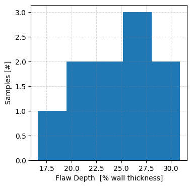
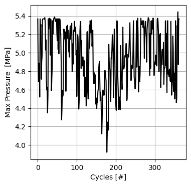
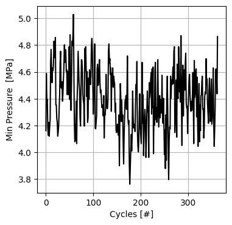
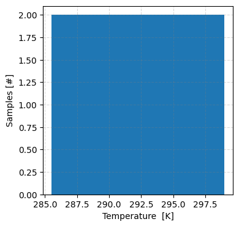
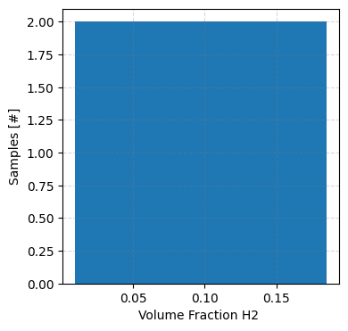
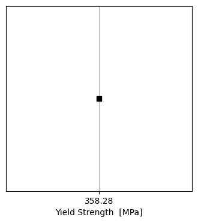
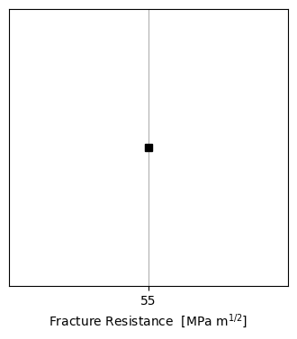
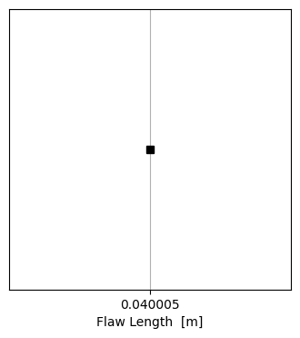
Checking that Random Loading and Residual Stress Capabilities Can Work At the Same Time
[27]:
pipe_outer_diameter = convert_in_to_m(36) # 36 inch outer diameter
wall_thickness = convert_in_to_m(0.406) # 0.406 inch wall thickness
yield_strength = convert_psi_to_mpa(52_000) # material yield strength of 52_000 psi
fracture_resistance = 55 # fracture resistance (toughness) MPa m1/2
flaw_depth = 25 # flaw 25% through pipe thickness
flaw_length = convert_in_to_m(1.575) # width of initial crack/flaw, m
temperature = 293 # K -> temperature of gas
volume_fraction_h2 = 1 # % mole fraction H2 in natural gas blend
surface = 'inside'
k_method = 'anderson' # Stress intensity factor method used
delta_c_rule = 'proportional'
crack_growth_model = {'model_name': 'code_case_2938'}
cycle_step = 1 # how many cycles in every numerical step
max_cycles = math.inf # maximum number of steps
k_res_explicit_det = DeterministicCharacterization(name='residual_stress_intensity_factor', value=12.)
analysis_det_w_resid = CrackEvolutionAnalysis(outer_diameter=DeterministicCharacterization(name='outer_diameter',
value=pipe_outer_diameter),
wall_thickness=DeterministicCharacterization(name='wall_thickness',
value=wall_thickness),
flaw_depth=DeterministicCharacterization(name='flaw_depth',
value=flaw_depth),
max_pressure=TimeSeriesCharacterization(name='max_pressure',
value=convert_psi_to_mpa(pressure_data['Max'].values)),
min_pressure=TimeSeriesCharacterization(name='min_pressure',
value=convert_psi_to_mpa(pressure_data['Min'].values)),
temperature=DeterministicCharacterization(name='temperature',
value=temperature),
volume_fraction_h2=DeterministicCharacterization(name='volume_fraction_h2',
value=volume_fraction_h2),
yield_strength=DeterministicCharacterization(name='yield_strength',
value=yield_strength),
fracture_resistance=DeterministicCharacterization(name='fracture_resistance',
value=fracture_resistance),
flaw_length=DeterministicCharacterization(name='flaw_length',
value=flaw_length),
stress_intensity_method=k_method,
surface=surface,
cycle_step=cycle_step,
max_cycles=max_cycles,
residual_stress_intensity_factor=k_res_explicit_det)
analysis_det_w_resid.perform_study()
/Users/bbschro/Development/helpr_external/src/helpr/physics/stress_state.py:521: UserWarning: Inner Radius / wall thickness exceeds bounds 5 <= R_i/t <= 20, R_i/t = 43.33497536945812, violating Anderson solution limits.
wr.warn('Inner Radius / wall thickness exceeds bounds ' +
[28]:
analysis_det_w_resid.postprocess_single_crack_results()
_, _ = analysis_det_w_resid.get_design_curve_plot()
_, _ = analysis_det_w_resid.assemble_failure_assessment_diagram()
Cycles to a(crit) Cycles to 25% a(crit) Cycles to 1/2 Nc \
Total cycles 126753.937315 1.000000 63376.968658
a/t 0.310651 0.077663 0.268675
Cycles to FAD line
Total cycles 50863.895232
a/t 0.264147
/Users/bbschro/Development/helpr_external/src/helpr/api.py:960: UserWarning: Extraction of FAD intersection QoI when using user specified random loading profile may be incorrect due to its stochastic nature.
warnings.warn(
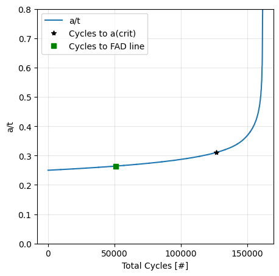
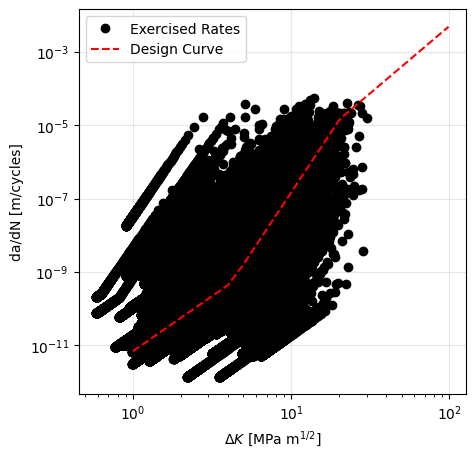
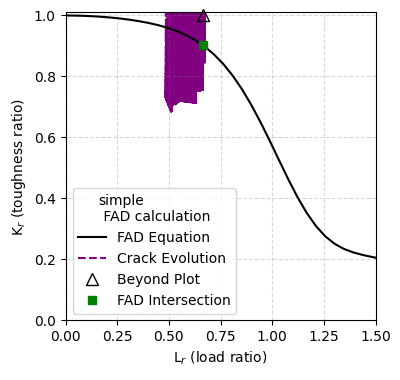
[29]:
pipe_outer_diameter = DeterministicCharacterization(name='outer_diameter',
value=convert_in_to_m(36)) # pipe outer diameter, m
wall_thickness = DeterministicCharacterization(name='wall_thickness',
value=convert_in_to_m(0.406)) # pipe wall thickness, m
yield_strength = DeterministicCharacterization(name='yield_strength',
value=convert_psi_to_mpa(52_000)) # material yield strength, psi
fracture_resistance = DeterministicCharacterization(name='fracture_resistance',
value=55) # fracture resistance (toughness), MPa m1/2
max_pressure = TimeSeriesCharacterization(name='max_pressure',
value=convert_psi_to_mpa(pressure_data['Max'].values))
min_pressure = TimeSeriesCharacterization(name='min_pressure',
value=convert_psi_to_mpa(pressure_data['Min'].values))
temperature = UniformDistribution(name='temperature',
uncertainty_type='aleatory',
nominal_value=293,
upper_bound=300,
lower_bound=285) # gas blend temperature variation, K
volume_fraction_h2 = UniformDistribution(name='volume_fraction_h2',
uncertainty_type='aleatory',
nominal_value=0.1,
upper_bound=0.2,
lower_bound=0) # % volume fraction H2 in natural gas blend, fraction
flaw_depth = TruncatedLognormalDistribution(name='flaw_depth',
uncertainty_type='aleatory',
nominal_value=25,
mu=3.2,
sigma=.17,
upper_bound=80,
lower_bound=0.001) # initial flaw depth, % wall thickness
flaw_length = DeterministicCharacterization(name='flaw_length',
value=convert_in_to_m(1.575)) # length of initial crack/flaw, m
k_res_explicit_prob = NormalDistribution(name='residual_stress_intensity_factor',
uncertainty_type='aleatory',
nominal_value=12.,
mean=12.,
std_deviation=2)
sample_size = 10
sample_type = 'lhs'
analysis_prob_w_resid = CrackEvolutionAnalysis(outer_diameter=pipe_outer_diameter,
wall_thickness=wall_thickness,
flaw_depth=flaw_depth,
max_pressure=max_pressure,
min_pressure=min_pressure,
temperature=temperature,
volume_fraction_h2=volume_fraction_h2,
yield_strength=yield_strength,
fracture_resistance=fracture_resistance,
flaw_length=flaw_length,
aleatory_samples=sample_size,
sample_type=sample_type,
stress_intensity_method=k_method,
surface=surface,
residual_stress_intensity_factor=k_res_explicit_prob,
cycle_step=cycle_step,
max_cycles=max_cycles)
analysis_prob_w_resid.perform_study()
/Users/bbschro/Development/helpr_external/src/helpr/physics/stress_state.py:521: UserWarning: Inner Radius / wall thickness exceeds bounds 5 <= R_i/t <= 20, R_i/t = 43.33497536945812, violating Anderson solution limits.
wr.warn('Inner Radius / wall thickness exceeds bounds ' +
[30]:
analysis_prob_w_resid.generate_probabilistic_results_plots(plotted_variable=['Cycles to a(crit)'])
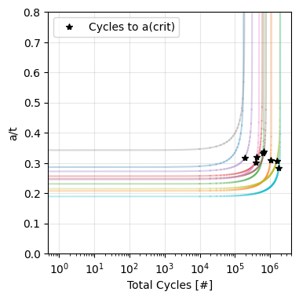
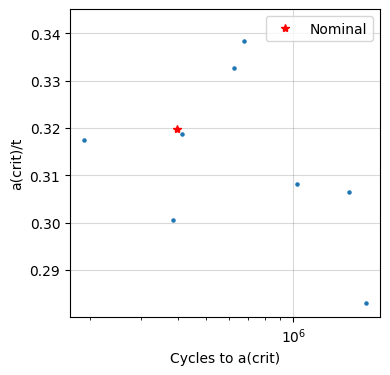
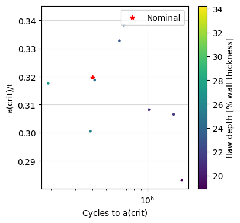
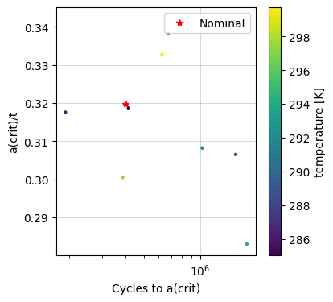
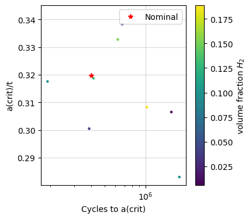
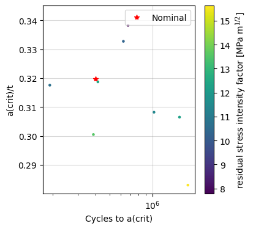
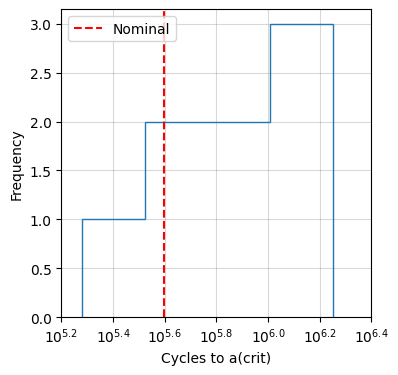
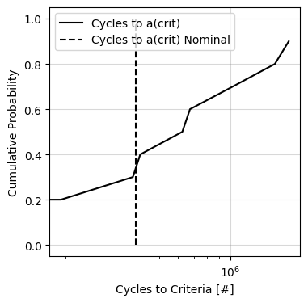
[31]:
_, _ = analysis_prob_w_resid.assemble_failure_assessment_diagram()
/Users/bbschro/Development/helpr_external/src/helpr/api.py:960: UserWarning: Extraction of FAD intersection QoI when using user specified random loading profile may be incorrect due to its stochastic nature.
warnings.warn(
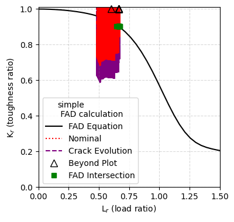
Testing Capability with Depressurization Spike
[32]:
temperature = 293 # K -> temperature of gas
volume_fraction_h2 = 1 # % mole fraction H2 in natural gas blend
pipe_outer_diameter = convert_in_to_m(36) # 36 inch outer diameter
wall_thickness = convert_in_to_m(0.406) # 0.406 inch wall thickness
yield_strength = convert_psi_to_mpa(52_000) # material yield strength of 52_000 psi
fracture_resistance = 55 # fracture resistance (toughness) MPa m1/2
flaw_depth = 25 # flaw 25% through pipe thickness
flaw_length = convert_in_to_m(1.575) # width of initial crack/flaw, m
surface = 'inside'
k_method = 'anderson' # Stress intensity factor method used
delta_c_rule = 'proportional'
crack_growth_model = {'model_name': 'code_case_2938'}
cycle_step = 1 # how many cycles in every numerical step
max_cycles = math.inf # maximum number of steps
pressure_data_spike = pd.read_csv('./Data/random_loading_demo_spike.csv', index_col=0)
environment_module_spike = \
EnvironmentSpecificationRandomLoad(max_pressure=convert_psi_to_mpa(pressure_data_spike['Max'].values),
min_pressure=convert_psi_to_mpa(pressure_data_spike['Min'].values),
temperature=temperature,
volume_fraction_h2=volume_fraction_h2)
load_cycling_spike, life_criteria_spike = create_pipe_evaluation(environment_module_spike)
/Users/bbschro/Development/helpr_external/src/helpr/physics/stress_state.py:521: UserWarning: Inner Radius / wall thickness exceeds bounds 5 <= R_i/t <= 20, R_i/t = 43.33497536945812, violating Anderson solution limits.
wr.warn('Inner Radius / wall thickness exceeds bounds ' +
[33]:
_, _ = plot_random_loading_profiles(minimum_pressure=pressure_data_spike['Min'].to_list(),
maximum_pressure=pressure_data_spike['Max'].to_list(),
pressure_units='psi')
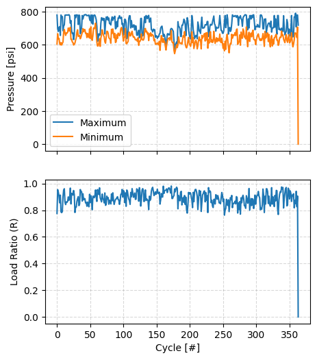
[34]:
specific_life_criteria_result_spike = report_single_pipe_life_criteria_results(life_criteria_spike, pipe_index=0)
specific_load_cycling_spike = report_single_cycle_evolution(load_cycling_spike, pipe_index=0)
Cycles to a(crit) Cycles to 25% a(crit) Cycles to 1/2 Nc \
Total cycles 34404.354916 1.000000 17202.177458
a/t 0.402765 0.100691 0.284931
Cycles to FAD line
Total cycles 27342.000000
a/t 0.326664
[35]:
plt.figure(figsize=(5, 4))
plt.plot(specific_load_cycling1['Total cycles'], specific_load_cycling1['a/t'], 'b--', label='w/o annual spike')
plt.plot(specific_life_criteria_result1['Cycles to a(crit)'][0],
specific_life_criteria_result1['Cycles to a(crit)'][1], 'k*', zorder=5)
plt.plot(specific_load_cycling_spike['Total cycles'], specific_load_cycling_spike['a/t'], 'r-', label='w/ annual spike')
plt.plot(specific_life_criteria_result_spike['Cycles to a(crit)'][0],
specific_life_criteria_result_spike['Cycles to a(crit)'][1], 'k*')
plt.grid(color='gray', linestyle='--', alpha=0.3)
plt.legend(loc=0, title='Variable Pressure Loading')
plt.xlabel('Total Cycles [#]')
plt.ylabel('a/t [-]')
plt.locator_params(axis='x', nbins=6)
plt.xscale('log')
plt.xlim(1E1, 3E7)
plt.figure(figsize=(5, 4))
plt.plot(specific_load_cycling1['Total cycles'],
specific_load_cycling1['R ratio'], 'b--', zorder=5)
plt.plot(specific_load_cycling_spike['Total cycles'],
specific_load_cycling_spike['R ratio'], 'r-')
plt.grid(color='gray', linestyle='--', alpha=0.3)
plt.xlabel('Total Cycles [#]')
plt.ylabel('Load Ratio (R)')
plt.xscale('log')
plt.figure(figsize=(5, 4))
plt.plot(specific_load_cycling1['Total cycles'],
specific_load_cycling1['Kmax (MPa m^1/2)'] - specific_load_cycling1['Kmin (MPa m^1/2)'], 'b--', zorder=5)
plt.plot(specific_load_cycling_spike['Total cycles'],
specific_load_cycling_spike['Kmax (MPa m^1/2)'] - specific_load_cycling_spike['Kmin (MPa m^1/2)'], 'r-')
plt.grid(color='gray', linestyle='--', alpha=0.3)
plt.xlabel('Total Cycles [#]')
plt.ylabel('$\Delta$ K [MPa m$^{1/2}$]')
plt.xscale('log');
/var/folders/m7/xj3t74md7k32bgn0f0bvz3mr002lyh/T/ipykernel_24616/3863691916.py:4: FutureWarning: Series.__getitem__ treating keys as positions is deprecated. In a future version, integer keys will always be treated as labels (consistent with DataFrame behavior). To access a value by position, use `ser.iloc[pos]`
plt.plot(specific_life_criteria_result1['Cycles to a(crit)'][0],
/var/folders/m7/xj3t74md7k32bgn0f0bvz3mr002lyh/T/ipykernel_24616/3863691916.py:5: FutureWarning: Series.__getitem__ treating keys as positions is deprecated. In a future version, integer keys will always be treated as labels (consistent with DataFrame behavior). To access a value by position, use `ser.iloc[pos]`
specific_life_criteria_result1['Cycles to a(crit)'][1], 'k*', zorder=5)
/var/folders/m7/xj3t74md7k32bgn0f0bvz3mr002lyh/T/ipykernel_24616/3863691916.py:8: FutureWarning: Series.__getitem__ treating keys as positions is deprecated. In a future version, integer keys will always be treated as labels (consistent with DataFrame behavior). To access a value by position, use `ser.iloc[pos]`
plt.plot(specific_life_criteria_result_spike['Cycles to a(crit)'][0],
/var/folders/m7/xj3t74md7k32bgn0f0bvz3mr002lyh/T/ipykernel_24616/3863691916.py:9: FutureWarning: Series.__getitem__ treating keys as positions is deprecated. In a future version, integer keys will always be treated as labels (consistent with DataFrame behavior). To access a value by position, use `ser.iloc[pos]`
specific_life_criteria_result_spike['Cycles to a(crit)'][1], 'k*')
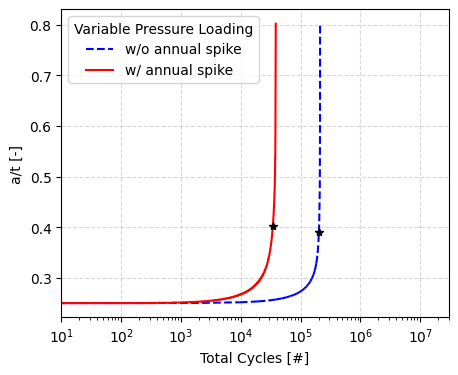
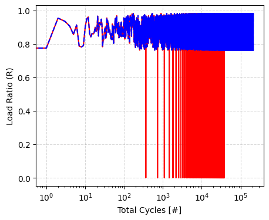
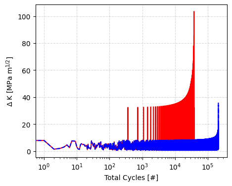